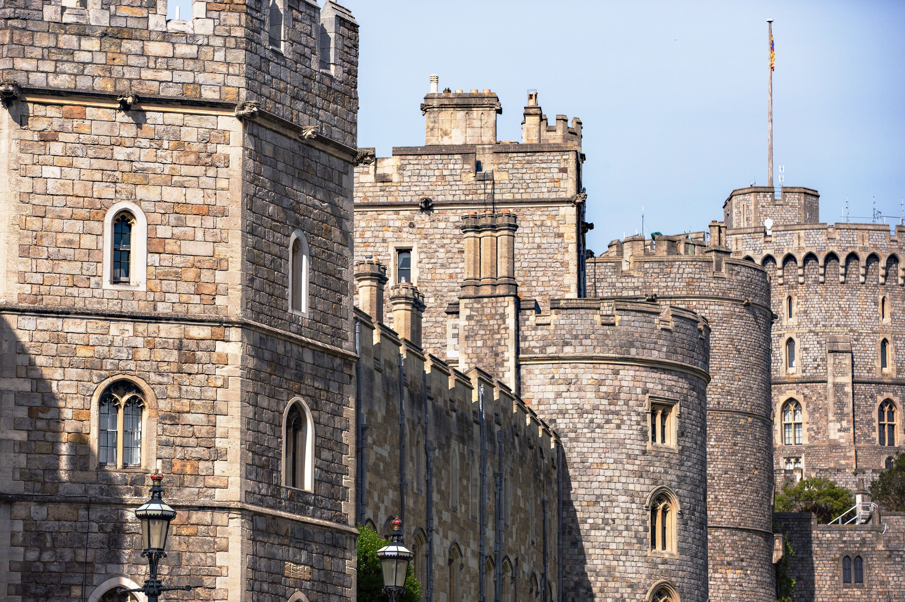

London
Tower of London
Her Majesty's Royal Palace and Fortress of the Tower of London
The Tower of London, officially Her Majesty's Royal Palace and Fortress of the Tower of London, is a historic castle located on the north bank of the River Thames in central London. It lies within the London Borough of Tower Hamlets, separated from the eastern edge of the square mile of the City of London by the open space known as Tower Hill. It was founded towards the end of 1066 as part of the Norman Conquest of England. The White Tower, which gives the entire castle its name, was built by William the Conqueror in 1078 and was a resented symbol of oppression, inflicted upon London by the new ruling elite. The castle was used as a prison from 1100 (Ranulf Flambard) until 1952 (Kray twins), although that was not its primary purpose. A grand palace early in its history, it served as a royal residence. As a whole, the Tower is a complex of several buildings set within two concentric rings of defensive walls and a moat. There were several phases of expansion, mainly under Kings Richard I, Henry III, and Edward I in the 12th and 13th centuries. The general layout established by the late 13th century remains despite later activity on the site.
The Tower of London has played a prominent role in English history. It was besieged several times, and controlling it has been important to controlling the country. The Tower has served variously as an armoury, a treasury, a menagerie, the home of the Royal Mint, a public record office, and the home of the Crown Jewels of England. From the early 14th century until the reign of Charles II, a procession would be led from the Tower to Westminster Abbey on the coronation of a monarch. In the absence of the monarch, the Constable of the Tower is in charge of the castle. This was a powerful and trusted position in the medieval period. In the late 15th century, the castle was the prison of the Princes in the Tower. Under the Tudors, the Tower became used less as a royal residence, and despite attempts to refortify and repair the castle, its defences lagged behind developments to deal with artillery.
The peak period of the castle's use as a prison was the 16th and 17th centuries, when many figures who had fallen into disgrace, such as Elizabeth I before she became queen, Sir Walter Raleigh, and Elizabeth Throckmorton, were held within its walls. This use has led to the phrase "sent to the Tower". Despite its enduring reputation as a place of torture and death, popularised by 16th-century religious propagandists and 19th-century writers, only seven people were executed within the Tower before the World Wars of the 20th century. Executions were more commonly held on the notorious Tower Hill to the north of the castle, with 112 occurring there over a 400-year period. In the latter half of the 19th century, institutions such as the Royal Mint moved out of the castle to other locations, leaving many buildings empty. Anthony Salvin and John Taylor took the opportunity to restore the Tower to what was felt to be its medieval appearance, clearing out many of the vacant post-medieval structures. In the First and Second World Wars, the Tower was again used as a prison and witnessed the executions of 12 men for espionage. After the Second World War, damage caused during the Blitz was repaired, and the castle reopened to the public. Today, the Tower of London is one of the country's most popular tourist attractions. Under the ceremonial charge of the Constable of the Tower, and operated by the Resident Governor of the Tower of London and Keeper of the Jewel House, the property is cared for by the charity Historic Royal Palaces and is protected as a World Heritage Site.